꽃냉장고
꽃집 전기요금, 꽃냉장고 운영에서 줄일 수 있는 부분
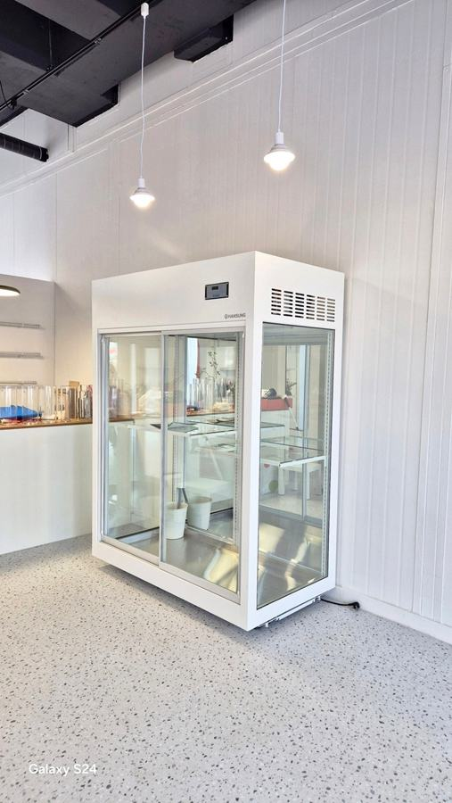
꽃집 전기요금은 꽃냉장고 한 대를 얼마나 무리하게 쓰는지에 크게 좌우됩니다. 모든 꽃을 가장 낮은 온도에 몰아넣지 말고 취급하는 꽃에 맞게 보관 환경을 나누고, 작업 중 문 여는 시간과 조명 열, 설치 자리의 열기를 줄이면 부담이 눈에 띄게 달라집니다.
안녕하세요. 꽃집 냉장 쇼케이스를 맞춤으로 만들고 설치하는 한성쇼케이스입니다.
꽃집 사장님들이 성수기를 지나고 가장 놀라시는 게 전기요금 고지서입니다. 어버이날이나 졸업 시즌처럼 꽃이 가장 많이 들어올 때는 냉장고 문을 열어 둔 채 작업하는 시간도 길어지니 자연스러운 일이기도 하죠.
그런데 비수기에도 요금이 줄지 않는다면 꽃냉장고를 쓰는 방식에서 새는 곳이 있을 가능성이 큽니다. 꽃냉장고는 꽃의 생명을 지키는 설비라 무작정 덜 쓸 수는 없지만, 같은 결과를 덜 무리해서 낼 방법은 있습니다.
오늘은 꽃집 전기요금을 꽃냉장고 중심으로 점검하는 순서를 정리해 드리겠습니다.
1. 모든 꽃을 같은 온도에 두고 있다면
꽃은 대체로 낮은 온도에서 오래 가지만, 열대성 꽃은 너무 차가우면 오히려 냉해를 입습니다. 그런데 냉장고 한 대에 모든 꽃을 넣고 가장 예민한 꽃 기준으로 온도를 바짝 낮춰 두면, 냉해를 입는 꽃도 생기고 전기도 필요 이상으로 씁니다.
주로 취급하는 꽃 종류를 먼저 정리해 보세요. 냉장이 꼭 필요한 꽃과 상온 진열이 가능한 꽃, 열대성 꽃을 나누면 냉장고에 넣을 양 자체가 줄어듭니다.
구체적인 온도는 꽃 종류에 따라 다르니 거래처와 함께 정하시는 게 좋습니다.
- 냉장이 꼭 필요한 꽃과 상온 진열 꽃을 나누세요.
- 열대성 꽃은 따로 위치를 정해 두세요.
2. 작업 중 문 열어 두는 시간
꽃다발을 만들 때 냉장고 문을 열어 둔 채 한 송이씩 꺼내는 습관이 가장 흔한 원인입니다. 문이 열려 있는 동안 차가운 공기가 바닥으로 쏟아져 나가고, 닫고 나서도 다시 온도를 맞추느라 기계가 오래 돕니다.
주문서를 보고 필요한 꽃을 한 번에 꺼내 작업대 물통에 옮긴 뒤 문을 닫는 순서로 바꿔 보세요. 작업대가 냉장고에서 멀다면 동선을 다시 짜는 것도 방법입니다.
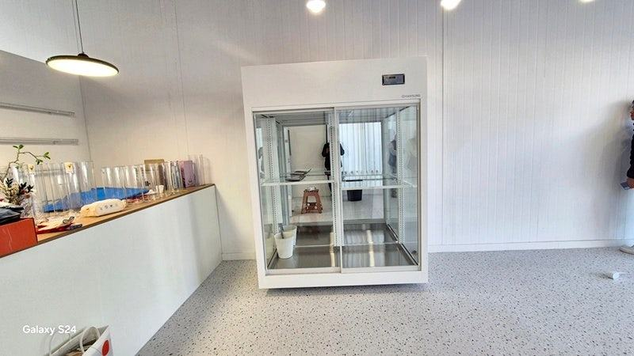
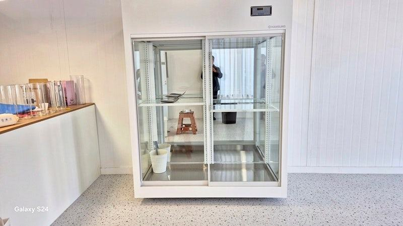
3. 조명 열과 설치 자리
꽃냉장고는 꽃 색을 살리려고 조명을 넉넉히 넣는 경우가 많은데, 조명에서 나는 열도 냉장고가 빼내야 할 부담입니다.
조명과 냉장 공간을 어떻게 나누어 설계했는지에 따라 차이가 생기니, 새로 들이신다면 조명 발열 처리 방식을 꼭 물어보세요.
설치 자리도 중요합니다. 꽃집은 쇼윈도 앞에 냉장고를 두는 경우가 많아 오후 햇빛을 그대로 받기 쉽습니다.
블라인드나 차양으로 직사광선을 가리고, 뒷면과 옆면에 통풍 여유를 남겨 기계 열이 잘 빠지게 해 주세요.
- 오후 햇빛이 냉장고 유리에 닿는지 확인하세요.
- 기계실 쪽에 포장지 박스를 쌓아 두지 마세요.
4. 물통과 바닥 관리
꽃 물통에서 넘친 물과 떨어진 잎이 바닥판과 배수구에 쌓이면 내부 습도가 지나치게 올라가 성에와 결로가 늘고, 기계가 그만큼 더 일합니다.
마감 때 바닥 물기를 닦고 잎 찌꺼기를 걷어 내는 습관이 전기요금과 위생을 함께 지킵니다.
포장지 부스러기는 기계실 흡입구로 빨려 들어가기도 합니다. 응축기 주변 먼지를 정기적으로 털어 주세요.
꽃 손질 작업대를 기계실 흡입구 바로 앞에 두셨다면 위치를 조금만 옮겨도 먼지 유입이 줄어듭니다. 문 패킹에 꽃가루나 물때가 끼어 있으면 문이 꼭 닫히지 않으니 함께 닦아 주세요.
체크리스트
- 취급 꽃 종류별 냉장·상온·열대성 구분
- 꽃 꺼낼 때 한 번에 꺼내고 문 닫기
- 조명 발열 처리 방식 확인
- 직사광선 차단과 뒷면 통풍
- 바닥 물기·잎 찌꺼기·응축기 먼지 청소
현장에서 자주 보는 경우: 꽃 종류를 생각하지 않고 고른 꽃냉장고
꽃냉장고를 오래 만들고 설치하다 보니 잘 되는 꽃집과 그렇지 않은 꽃집의 차이가 보입니다. 가장 흔한 건 모든 꽃을 같은 온도에 넣어 두는 경우입니다.
열대성 꽃은 너무 낮은 온도에서 냉해를 입기 때문에, 어떤 꽃은 싱싱한데 어떤 꽃은 금방 상하는 고민이 생기죠.
그래서 상담할 때는 먼저 매장에서 주로 취급할 꽃 종류와 판매 방식을 여쭙니다. 완성된 꽃다발이 주력이라면 진열이 더 중요해지고, 전면 유리가 관리하기 쉬운지, 오염에 강한지, 내부 조명을 넣을 수 있는지도 함께 확인합니다.
냉장 구조와 설치 공간, 규격을 같이 보고 실제로 적용 가능한 크기로 제작했습니다.
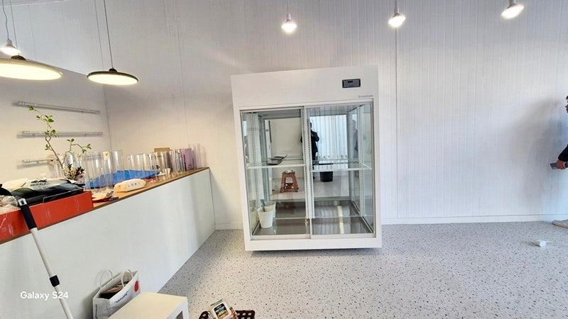
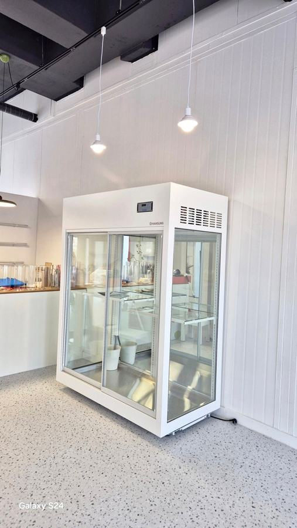
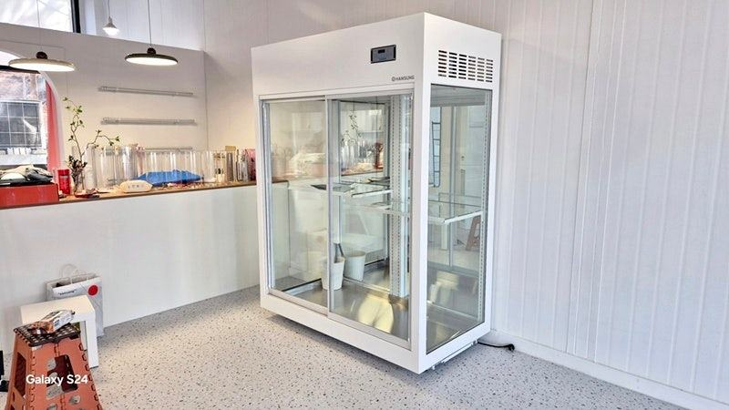
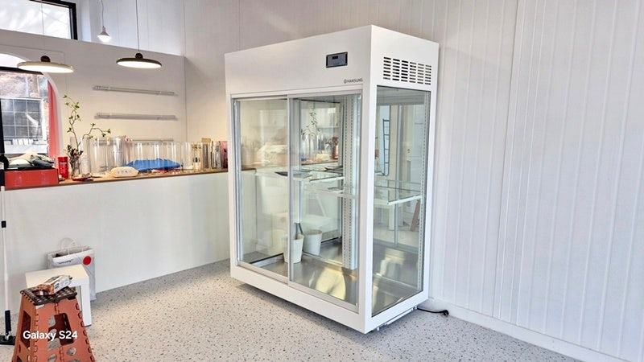
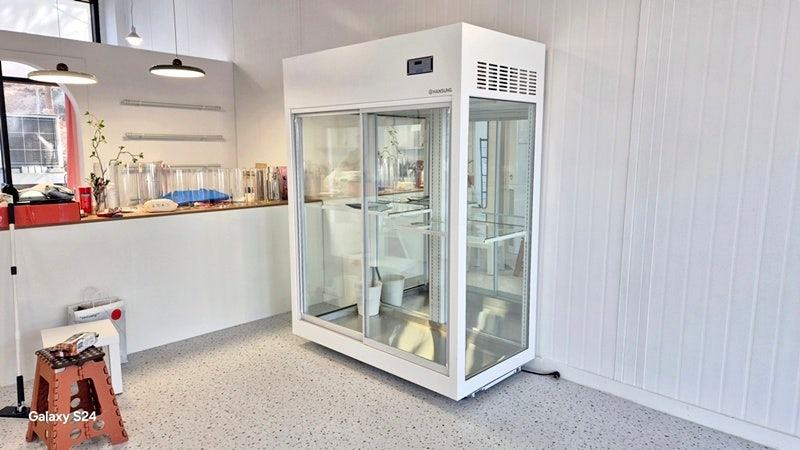
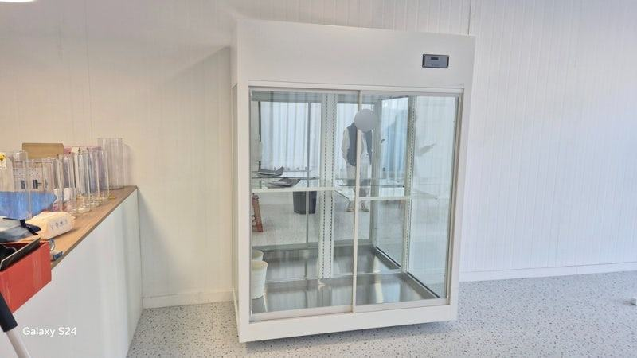
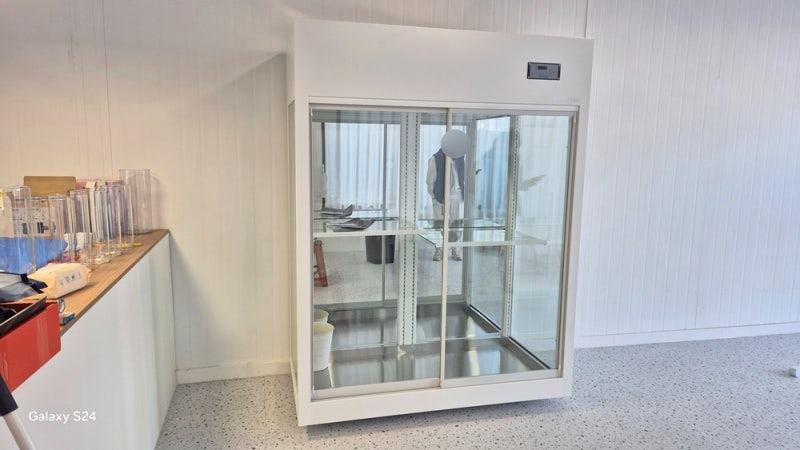
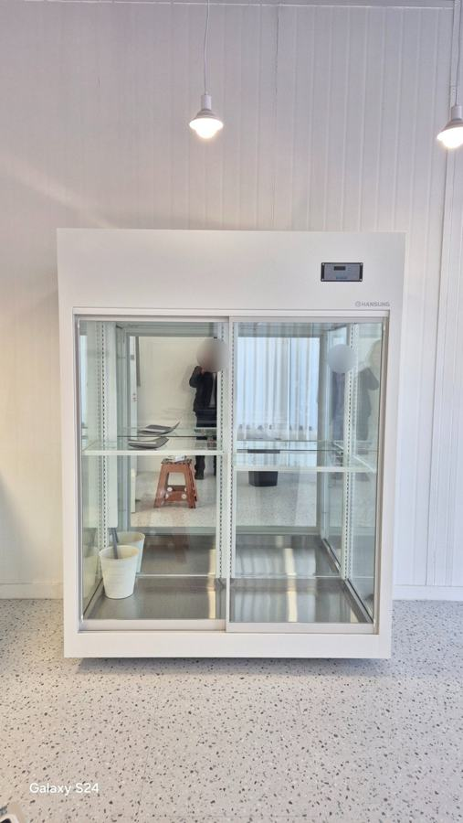
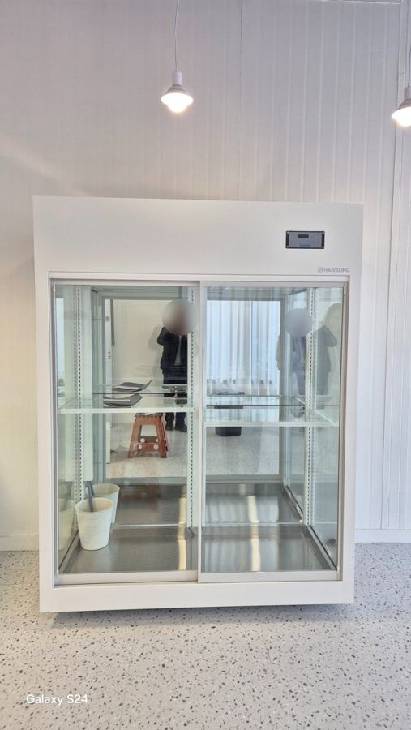
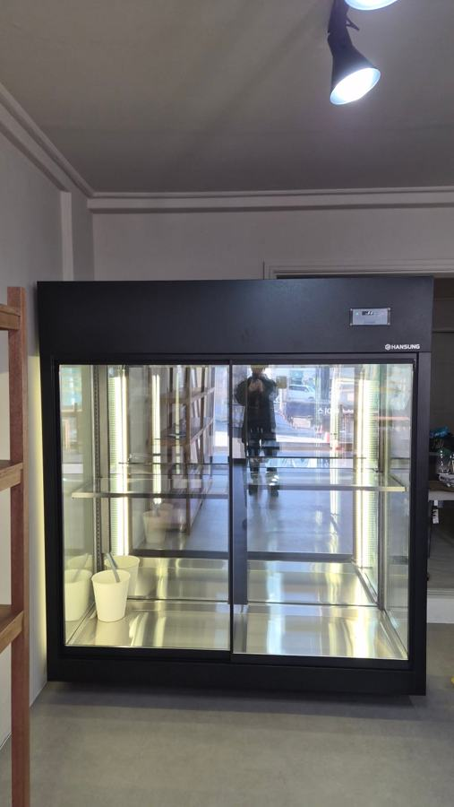
자주 묻는 질문
꽃냉장고를 밤에 꺼 두면 전기요금이 줄어드나요?
꽃이 들어 있다면 끄지 않는 편이 안전합니다. 대신 마감 때 문을 확실히 닫고 바닥 물기를 정리해 밤사이 기계 부담을 줄여 주세요.
꽃냉장고 한 대로 모든 꽃을 보관해도 되나요?
취급하는 꽃이 비슷하다면 가능하지만, 열대성 꽃이 섞여 있다면 위치를 나누거나 상온 진열을 함께 쓰는 편이 좋습니다.
취급 꽃 목록을 알려 주시면 구성을 함께 정해 드립니다.
설치 후 조명 고장은 어떻게 하나요?
대표전화 031-986-2458로 접수해 주세요. 위 사례처럼 제작한 꽃냉장고는 1년 무상 전구 A/S를 제공하며, 전국 240여 개 A/S 센터를 통해 대응합니다.
매장 조건에 맞춰 만드는 한성쇼케이스
원하시는 제품 사진과 설치할 공간 사진만 보내 주셔도 매장에 맞는 구성을 추천해 드립니다.
- 전국 240여 개 A/S 전담 센터 운영
- 본사 대량 자재 매입으로 품질 대비 합리적인 가격
- 유럽제·삼성 냉각 콤프레셔 적용
- 국내 최초 쇼케이스 전문 디자이너 상주
매장 폭과 원하는 진열 구성을 알려 주세요. 실측과 견적을 안내해 드립니다.
031-986-2458